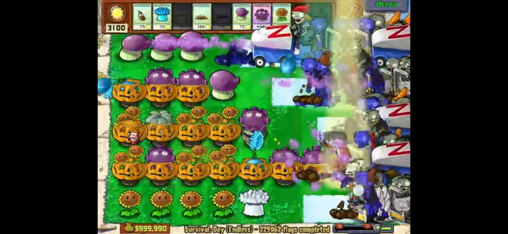
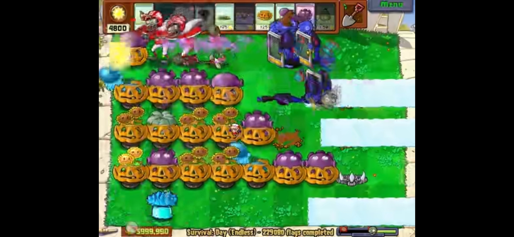
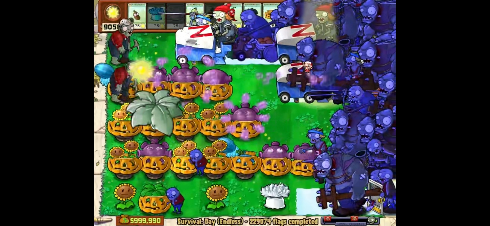
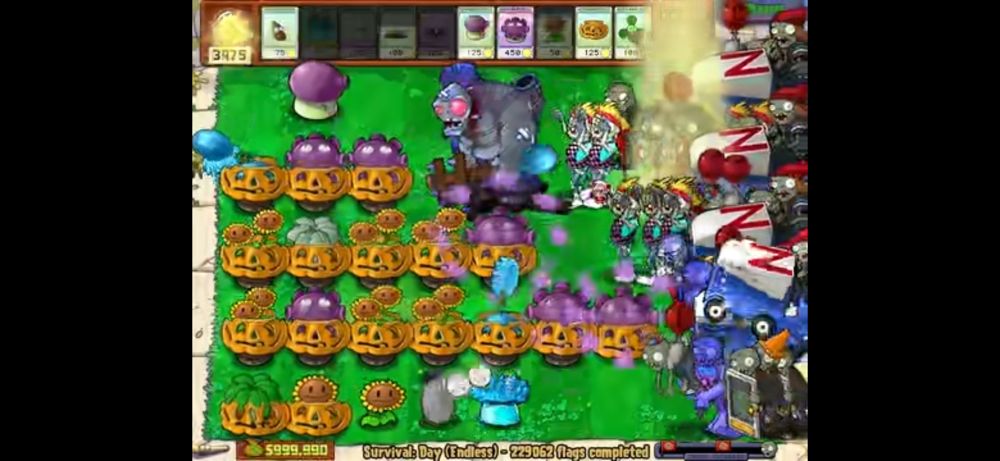
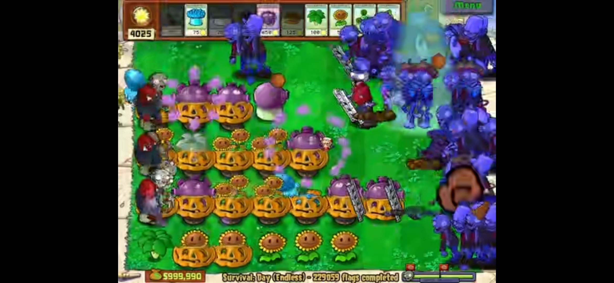
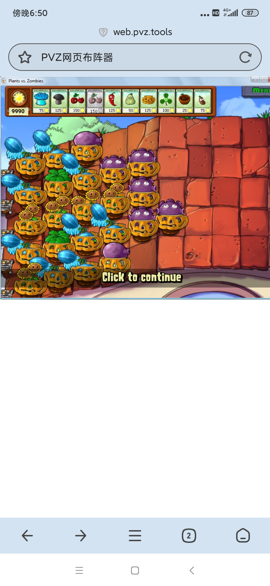

炽热语录
作者：炽热-2022（🔗bilibili）
收录日期：2022-08-05
来个人评论啊，打了18个小时的成品[doge]
这是我DE无炮的一小步，但却是DE无炮“垃圾场化”的一大步。
命题爆破
全程开启植物虚弱。我能确保在我录的视频里封面植物是无伤的，我先不把话说死了，到底是不是无伤无炮欢迎前来证伪。至少说，她是首个能演示开了植物虚弱的无炮阵。
2-9核武容易漏炸5路小丑，两喷喷杀之。樱桃固定炸中路，1路倭瓜、魅惑菇控晚爆丑，魅惑菇没让小丑吃到也没关系，让小丑和其他僵尸互啃也起到了拖延效果。也可利用三叶草特性垫丑。
之后再核武炸两波中转一下。有撑杆注意中三路六列种了植物就铲掉。
底线无矿工无篮球可偷花，真要说优化可能可以砍到5花。对于底线地刺王，小鬼偷家可不是好事。
阳光下降有点多，只录了两遍，也不追求其他的了。 什么暴风雨+全屏浓雾，还要全程不开雾的那种？快去请作案老手。我不打了，这要求光是想想就吓人！
如果开两倍速玩两仪无炮会怎么样？
还会怎么样?会原地去世呗！
全程无暂停键，开僵尸快跑，半红，其余不用修改器。狗血的是僵尸快跑还有BUG，核坑恢复速度还是原样，变相增加难度，下次用变速齿轮打。
节目效果满分，高能片段在2：00-3：25和4:30-5:40，看完后兄弟们请把666打在公屏上！
阵型还可做略微优化，但这视频太有趣了，先发为敬。
本视频全程无任何一个暂停键。
NE 无冰瓜无炮这样说道，“我出生的时候好像把什么东西踩在了脚底下？”
边路小丑自然抗性，中三路超高小丑抗性，放几波不控也是没有问题。
为什么选用西瓜而非机枪？西瓜有群体AOE，对小丑、橄榄、冰车会更好，机枪只是单体，而且还有梯子这一克星。
核位再次优化后解决中路红眼压力过大的问题，没有比这更优的核序了，此视频就是最好的证明。
中路2瓜减速线足，中三路有了减速控丑后，再也不会被说成是脸无了。边路1喷换1瓜，减少红眼压力、南瓜压力、减速真空。边路同样为减速控丑，小概率被炸，5路炸率大于1路，正常打无视即可。
旁路机动位核武的利用率不要太高，像中路机动位打到一半还要在边路放核，进而增加另一边的红眼压力，旁路机动位核武全部全屏（除了W20），没这烦恼。
老子不打无炮是植吧的损失，这样说我几个月造的无炮阵数量和质量抵得上植吧这3年的无炮阵了，最难的命题间隔无炮我也才花了5天造出来的，其次FE水无是3天，其他的比如PE和NE心无炮（你们那群黄牌那些吧务造了5年都造得还是个不论不类的）、DE六边形（非极限的敢都不敢想）、DE方块（py还是得老子来开）。你说你们造了啥子嘛？也就一个全面砍花，砍花才是必然的，别人蓝字吧DE0砍成6花花了好大功夫？而且砍还砍不全，屋顶砍花还是空起的，是不是又要我去开屁股？所以说我觉得你们还是吃干饭得行。
核武放于8列时不想被小丑炸，掌握方法是关键。
1、核武切勿放置过早，以防超早爆小丑；
2、以冰车速度为判断标准，在冰车走到6格半左右时引爆，即可避免被小丑炸核。
啥，出怪没冰车，那自求多福（开玩笑，没冰车也可以以跳跳、气球为判断依据。都没有，就靠熟练度凭感觉）。
RE 无植物是终极的极限无炮阵型，是最终的无炮极限阵。而RE无植物（5车3行花盆）是实现RE 无植物的第一步。
操作小技巧：辣椒烧边路、樱桃炸旁路。利用好白天可存核的优势提前找好位置放核，多多注意小丑分布，避免被炸核。也多多注意伞的血量，伞被小鬼啃光后一定要及时补充，前场篮球可是虎视眈眈的。大多数Sl都是因这两种情况，红眼反而不是最主要担心对象。
吹个牛，该视频在我玩完ME四行放空无炮后花了两小时录好的。
16种刷怪。
出怪水没得法，出怪多早去世了，值得一提的是这是目前第一个DE无植类刷了梯子的视频。
注意一下前几波樱桃必须炸到篮球，不然玩不了。这几个视频收尾老是手滑失误，不过我懒得重新打了，还是那句话不要在意这些细节。
两个小时的作品，上次12怪用了18个小时。原因也许是阵型更优了，又或者是自己手法更熟练了。
P2做对比。
经典塔曾不能无尽？那只是过去的传说罢了
阵型名：经典塔曾
要求：96顶满、不用大喷控丑、无永久存冰位。 此阵得无炮仙真传，小丑？放羊就是了，参考阵型：初版DE0、初版有限控丑打法的顶满无炮。
水路8、9列被炸后依旧有超高车抗，即使不补曾也可安心放羊。
丑抗较高，被炸就补曾，注意岸路被炸时必须及时补。W10和W20出早爆丑的概率高，需要用冰，其余波次不应用。原理是，早冰边路丑提前进入减速，僵尸积留过多挡瓜严重，出现晚爆丑概率翻倍。游戏时需时刻注意边路丑，丑在9列被冰瓜溅射到时，需用特殊处理(1800、冰)。
全场无小偷盲点，无需特殊处理小偷。
边路冰瓜无需加套，无套也有自然橄榄抗性，加套累赘难防红眼。
4花2F不补曾阳光平均能上涨2500+，5花3000+。求稳，选择5花。
封面为最优解。
五行冰车场地首个成熟的神之无炮
不得不说雪漠北永远滴神，其构阵与解法思路即使放到现在也不过时。
此阵阳光6花(外加简单关种花)其实够，但免得有人较真说这是弱命题，不是“真”神无，索性种7花。每路有两瓜以上溅射伤害，用出场冰不会被炸，W10和20除外（出场冰被炸地刺王概率也会小很多）。
慢速打法老套路，不细讲。重点在于变速和极速的地刺王带卡上，有红眼卡好用冰能稳住C3节奏，保底C4。极速波间隔用冰，把小丑炸曾率降到最低。变速上半F留意倭瓜和樱桃的释放时机，以防止被炸地刺王后无法处理冰车，以及倭瓜尽量不刷新放，免得加速刷新。
神之无炮の终解（极限全红）
一念同神，
本人自封我为无炮命题终结者，
若是算上五行冰车场地的神无，该命题已有八年半无解；若是只算蘑菇园神无，该命题也有四年的历史，
评论区来个懂哥说说这是多久未解的命题。
原作者：czmppppp（
记得是那年夏天，5p在某贴出了此阵，并表示自己不会，死于中路红眼压力过大。大人时代变了。现如今的技术突飞猛进，早已不是当年那个录两仪10F算是手操无炮天花板的那个年代了。
我也是好心帮忙（水视频），已此祭奠先人的在天之灵。
有人说“无炮受难度限制，造型阵实用大于美观，罕有佳作问世。”
这我可就不同意了，你说五车场地无炮造不出优秀的造型阵还差不多，这些场地多造个传统无炮都能，更别说花多余心思研究造型了。但可别忽略了黑夜和雾夜两大无炮垃圾场地，特别是没冰车的黑夜，植物随便摆都能打好吧。都随便摆了，研究研究造型不难吧？
当然造阵还是要受限于造阵人的水平，之前有个例子，当时无炮的中流砥柱5、6年时间都没造出NE、PE心无，搞了半天也只搞了个四不像的钻石无炮出来，有些可哀。
手控RE无植物第六人，同时也是第二个RE无植无车视频，祝贺你挑战成功。
1、江东樵夫
2、灯笼碎片化
3、无风星月悬
4、凭本能运行的神
5、MarineMgnet
6、老俊2
特殊:有一颗红心(阵解者)
ME 斜梯无炮（超进化）
带上小喷保护花盆，防止被小鬼和橄榄啃掉，这样危急时刻就不需要铲喷放三叶草。
反复铲种小喷改栈道，骗巨人砸锤，缓解花盆压力，节省南瓜开支。这也是首个在屋顶场地能有效地运用小喷菇的阵。
月夜场地机动位可以告别历史舞台了，其只有在需要清冰道放核武、双辣椒带卡和兼用存冰位时有用。
目前市面上还没有一个成熟的de场地杂技构造的无炮阵，故填之。
命运之锤重出江湖。1路后置，且火力较低，容易刷新延迟，w8不放辣椒加速刷新，外加9列核容易漏炸，容易出事。2-5天生白核位，一锤定音。
2路必须加上冰瓜，不然1路丑抗有问题，红眼也极其容易有减速真空。
过去的无神无炮已被我完爆 （PE 方块无神）
封面为最优摆法。原因：倭瓜碾岸路丑不太靠谱，漏炸就要被炸花，边路则不太怕，垫一垫小丑最多炸套，且极变需要在边路放辣椒，故这样搭梯。巨人挡4路僵尸，难以观察潜水分布，瓜这样摆加层保险，猫扎5-2小鬼也方便。
操作细节：核武放8列应提前用冰，保护核武安全。这种精准C3不像核聚变、大伊万那样可以把黑核和樱桃波拉很长时间，这样操作白核炸多快都没有问题。该阵放白核最好卡一卡，免得被未提前减速的早爆丑炸。另外这阵好像有很高的小偷抗性。
全难关是该阵演示关中难度最低的关，重点是在变速和极速的解法上。
FE 新方块无神（4F南瓜抗压关）
原阵型冲关崩就崩在这4F，连续矿工红白海豚，挡不住。绞劲脑汁后，最终得出此阵。牺牲了一点红眼抗性，换来的是补得过来南瓜，这波买卖不亏。（裂荚版的就算了，带裂荚无法补底线杨桃，而且小偷抗性也不佳，打击红眼力度比杨桃还要差，下下之选）
操作细节：
先手辣椒，这样能烧两波矿工和核武波过后巨人抛出的小鬼，有巨人在也并不担心意外刷新。
8列种荷叶垫海豚，降低南瓜压力，注意4-8核坑不要在W1使用。
ME 大伊万无炮（C3极限全红)
ME场地最优的无炮阵，没有之一。
超高丑抗车抗红眼抗性，无视橄榄。构造后置，无需担心像7列曾布置那样变速意外刷新导致冰车碾曾。高红抗，全场完杀2血红，完美适应双核带卡，无需担心和7列群曾一样怕中三路被碾曾。省阳光，4路皆有车抗，只需处理中路冰车即可，不像圆锤处理起冰车那样麻烦。核位布置优秀，利用率高，爆炸范围广，无需担心白核安危，漏炸红眼。容错高，全难炸曾当核聚变或者当尖刀都能继续玩。双打法，易上手，此乃入门五车场地无炮的首选之阵。
不服?那疑问者先把五车场地的无炮全部打完后在问我说的公不公正。99%的五车场地无炮我皆有染指，优化和改动，我是深思熟虑、把所有阵型都横向对比后才得出此番结论，绝非胡言。
DE 核聚变无炮（6花）
增加了机动位和存冰位，此阵为DE场地核坑利用率最高的一个阵，能用到的全屏核坑高达7个。
唯一作者:本人。(本人十分遵重部分人的阵解高于阵型理念，第一个DE圆锤的阵解毕竟垃圾到不能再垃圾)
完美解决核武释放怕僵尸威胁因素(红丑舞撑)，完美解决漏炸边路红问题，完美解决南瓜压力问题。
DE 核聚变无炮（5花）
6花实乃“食之无肉弃之有味”之造。
无炮未来的发展走向——
1、造型类：
造型无炮留白多，且现体系成熟，新手老手都会造，大量优秀的造型阵会问世。不过那种只能打慢速的探索能成阵的话，以后造阵干脆就只贴张图算了。
2、命题类：
ME无神会走向成熟，MGE无神五年内难解，其他场地无神至少十年内宣告无解；常规五行冰车场地神无，无解；泳池半场无和陆地无(不偷输出植物)，无解；PE水无、ME/RE中无，十年内无解，DE中无，难解；PE/NE/ME最简格难解，DE/RE无解(没20格或者15格以下好意思挂这名)。
其他命题要么是含金量不高，要么就是过分难了，故不再赘述。
3、常规类：
五行冰车场地成熟的无炮发展停滞，小丑和冰车这俩抗性合格的无炮、各方面压制僵尸的稳定性能比肩群曾、斜梯、大伊万、核聚变等的无炮构造，不会再出现了。
4、极限类：
(1)、NE、FE双冰C2、C3带卡节奏无炮发展停滞，研究到头，尚未完成的NE10格是其最后的拼图。另，这两场地双核带卡还留有一丝发展空间；
(2)、PE和五车场地极限阵留白多，未来能多多发展，特别是白天场地的双冰C2，由于保核难，现还未有一个成熟的体系，ME倒是由于可以借助tsv强大的容错率和特性无视一些问题。此外高度高过RE无植的极限阵不会再有了(非常遗憾，我知道这点会打击研究者的热情与信心，但还是必须要说明白)。
5、探索类：
(1)、常规探索
有南瓜压力、经济问题，受红、丑、车、橄等僵尸威胁，导致无法无尽，有一两项尚有继续研究的价值。三项以上，不可完善，无继续研究的价值，还是趁早放弃，另辟蹊径得了；
(2)、只能打慢速，遇到变速、极速就无解的探索
无法完善，该类探索不可、无法衍生研究。论阵型本身的技术价值，是垃圾中的垃圾，类比超多炮中的假阵，只能当做表演操作的阵，不该被捧。希望广大群众还是要擦亮眼睛。
双核打法的区别：
C4IO
五车场地，部分构造放核需要用辣椒保核、开冰道。 核武:妈妈再也不用担心我的安全了。
C3
五车场地，放核需要用辣椒，部分情况需要用窝瓜保核。
核武:冰瓜兄，有你在，丑潜梯就是碰不到我。
C2
核武:来人，护驾。樱椒瓜：收到。
大雾场地综合最稳的无炮构造
综合最佳，比某个橄榄随时可能进家的阵要好不少。
樱桃窝瓜和冰等压力大再用，设置4花双核打法阳光上涨500+，双冰上涨1000+，按此阳光涨幅，保证能砍到2花。最适合的打法是双冰，双冰打法岸路4列可搭梯。边路4列搭梯，弊大于利，没必要。
玩植物大战僵尸把鼠标玩烂是什么概念
难度5，手速10-，耐力10-。 ban舞王。瑕疵版，意外被啃掉曾。
ban小丑7列全带套版难度5+，手速10+，耐力10+。 遗憾的是此要求已触碰到了我个人手速和耐力的极限，且由于出怪特性，10f后红眼密度加大，实战最多打1f，连续录2f鼠标左键都按烂了也录不出。只有1f又感觉难度低了一些，不发了。
全八列ban小丑、矿工、小偷，难度impossible。 之前试了一下，难度别提了，不是人类打的。
命运之锤?不好意思，这次我打长矛连机动位都不要了。无炮的核位规划我独占一档的。
原作者:雪漠北。
加花是无炮历史的倒退。
细节:w9没出红眼的话，核武可以种在4-6列，故意漏炸1-8、1-9僵尸，防止意外刷新。
中路瓜多，高达四个，红眼抗性极高，适应双核玩法，且能完全保证旁路7列不会被冰道覆盖，妙哉！
节奏c4io，对比c3，边路红眼压力着实大，且长矛构造少几个范围最大的全屏核位，容易漏炸边路，就算加了一瓜，边路喷还是不好保，老实换吧。
鬼谷问道_
呃换我的话收尾我会用4-8和2-8
炽热-2022
4-8要加入循环的，2-8也不太好去用，第10w怕恢复不了
外加要考虑变速，视频中的核位顺序已是最优解
更新—最优核解：
w1 2-9/4-9、2-8/4-8，循环3-9、2-6和2-7/4-7、4-6(原因是旁路小概率被冰道覆盖，这样保险)，w11 2-9/4-8、2-7/4-7，w20 2-9/4-9/2-8/4-8。
此核序，辣椒可自由放置。
RE 核聚变无炮
压轴作品
这是无炮的又一个里程碑之作，在最不适合打无炮、打双核的场地运用双核。且扬长避短，将双核带卡的优势发挥到极致，同时又成功解决了RE场地打双核无炮中的所有缺点，把双核运用得炉火纯青。
全场具备完全的2血红抗性，核坑分布广，利用效率高不漏炸，不怕红车丑梯威胁核武安全，RE场景双核C3的唯一载体(非极限可无尽)，集大成之作，是RE场景当之无愧的最佳无炮。
阳光方面也没问题，本人冲关后亲测，虽然在阳光消耗最多的全难关阳光会下降近2000，但只要少了其中一种关键僵尸或者关键僵尸组合我都能保证将阳光涨降控制到一个合理的数字(如视频所示，在合理的操作下极脆的变速关阳光甚至能不降反增，上涨500)，绝对会颠覆各位看客对无炮阳光韧性的认知。
本人十分满意这个作品，虽然她没攻克任何有价值有格调命题，但这并不妨碍我将其认作是我造的近200个无炮中最喜欢也是最得意的无炮。
韬略元机
命题新述
强命题
条件1、禁某种植物类，场上永不放置该植物。
条件2、放空类，在命题中放空的位置不放置任何卡片，包括花盆、小喷、一次性消耗植物。
条件3、放空类，在命题中放空的位置临时放置消耗植物，如冰、灰烬、三叶草、魅惑菇、便宜垫材(不包括阳光菇和向日葵)和一次性地刺、荷叶、花盆、南瓜、伞、高坚果等(套入节奏当中或者应急用，这些植物用完后若未消失，该立马铲掉)。
弱命题
条件4、放空类，仅在部分关卡常驻花(通称无巨人快速、极速)。
条件5、放空类，全部关卡皆种花。
条件6、放空类，在命题中放空的位置常驻部分植物，如花盆、荷叶、南瓜、坚果、地刺、大蒜等。
条件7、放空类，在命题中放空的位置常驻输出植物，如寒冰射手、大喷、杨桃、西瓜等。
条件8、放空类，在命题中放空的位置常驻紫卡，如冰瓜、曾等。
特殊，无伤类。
满足强命题条件的注释：
(1)无炮、无神等命题，需满足条件1。
(2)最简格命题，如两仪，满足条件3即可称为强命题。
(3)非极限神无、水无等较低难度放空命题，满足条件3。
受难度限制，放空类命题需适当降低标准。比如，条件2过于苛刻，要求所有命题都必须按照此要求才能能称为强命题，无必要。当然能满足更好，满足后可在名称前面加个“真”字。
完成命题的要求：
非极限
(1)无炮、无神等满足条件1。
(2)ne/fe/mge最简格、fe水无、de/mge中无、pe/fe岸无、非常规五车场地神无、pe/fe半陆地无、ne/mge半场无、ne/fe间隔无、pe/fe三行、ne两行满足条件3。
(3)de/me神无、de/me中无满足条件3外加4。
(4)fe陆无、pe/fe半场无满足条件7外和8。
极限
(1)常规五车神无、非ne/fe间隔无、pe/fe半无水无、常规五车中无、pe/fe陆无、非ne两行、非ne一行白鹭上青天满足条件3。
(2)非ne一行白鹭上青天(仅一行种植物)、无植(全场放空)满足条件6、7、8。
难度分级
评选标准：
1、考虑先后发布时间顺序和间隔，考虑命题完成时间的跨度，求签——解签。
2、是否为某个阵的衍生阵。
3、含未完成的命题，除心无外其余造型阵不收集。
4、放空类极限阵，除无植外，其余略。
1级难度(易，简单难度)：ne/pe/fe场地大部分非首发的常规无炮(即对应场地前后场有布置曾哥)、神之无炮，ne中无，fe智能无炮，略。
2级难度(好，中等难度)：ne首个常规无炮，de/me的常规无炮，pe石英钟，fe后退无炮，ne首个成熟的神无，ne无神，mge中无，全场地砍花，略。
2.5难度(优秀，较高难度)：re常规无炮(无炮炼狱场)，fe/ne/pe心无(其中ne和pe完成时间跨度至少5年)，ne/mge/fe/pe/de无植(条件7和8)，略。
3级难度(奇迹，高难度，各种完成时间跨度3-5年的阵)：pe/me/de/re首发无炮，两仪，pe首个神无，re双樱，re核聚变，ne/pe/me最简格，me无神，ne虚弱无伤，ne无南瓜，re/aqe无植(条件7和8)，mge神无，fe/me无神，fe水无，ne/fe间隔无，ne半场无、fe/pe半陆地无，pe/fe岸无，略。
4级难度(接近不可能，完成时间是5年还是10年?)：pe/mge无神，de/me神无，de中无，fe陆无(条件4和5)，fe半场无(条件4和5)，ne两行(条件4和5)，略。
5级难度(几乎不可能，完成时间是10年还是20年?)：ne无植(条件4)，除ne外的虚弱无伤、无南瓜，re神无，de/re无神，me/re中无，pe间隔无，pe水无，me/re无瓜无炮，fe两行。
6级难度(绝对不可能，除非修改规则，否则直到时间尽头都不可能完成的命题)：除ne外的无植(条件5及以上)，略。
适情雅趣
无炮评级
要求：
1、包含冲关和两个特殊场景(MGE和AQE)。2F—10F表演性质视频除部分情况以外禁止一切辅助。
DE在前场放黑核只准使用暂停键；RE在前场放黑核可使用按键、TSV、暂停键；NE/FE/PE放核禁止使用辅助(这三个场地比较简单，意外丢核，比如被丑炸，大不了重录就是)；ME/RE因节奏需要使用车底炸，允许使用按键精灵和TSV。
冲关要求为(至少50F)：可合理使用场外辅助和自动收集，但禁止全屏开雾。
原因为：开雾会降低“布阵”难度，有部分前置阵只种猫，不种灯笼，阵型明显无法长时间盲打，挂羊头卖狗肉，和屏蔽僵尸突袭没区别。自动收集则是考验操作者的手速、耐力、注意力，只考验操作，不考验造阵。
DE/RE放黑核可使用辅助，RE/ME车底炸可使用辅助，NE/MGE/FE/ME防止黑核被丑炸可以使用辅助，全场地防止樱桃和辣椒防丑可以使用辅助。 DE/PE蓝冰当垫材垫巨人可以使用辅助。其余情况尽量少用，比如铲南瓜套，或者丢关键植物情况很紧急的情况下可以适当用。
关于修改器的特殊选项，自动收集和全屏开雾:无炮2F-10F视频全部禁用；50F及以上的冲关，评级“中”以下禁用；超多炮评价“中”以下禁用一切辅助。
关于TSV，禁止同一时间段使用TSV时间滞留过长(2秒及以上)，原因为：TSV有个特殊bug，使用TAS时，核坑恢复速度不受影响，变相修改游戏规则。长时间使用TSV可视为作弊，尤其是是双核带卡(若已修复，这段话略过)。
2、出怪要求：
全难慢速(至少12怪)：
DE/MGE：必刷，红白车丑橄气偷铁普矿。选刷，舞撑梯跳蓝。降低难度，可选其余僵尸凑数。
NE：必刷，红白丑橄气偷铁普矿。选刷，舞撑梯跳蓝。
PE/FE：必刷，红白车丑橄气偷铁普海潜。选刷，矿舞撑梯跳蓝路。
RE/ME：必刷，红白车丑橄气偷铁普。选刷，撑梯跳蓝路。
跳跳可能进家的阵，必刷。前置到7列及以上的阵(前置炮为56列及以上)且植物无套，必刷舞王；有机枪火炬阵，必刷梯门；1列放空外加2列1曾或12列布置地刺王或123列布置地刺，可不刷矿工；水路间隔一格，且io能稳定击杀海豚，可不刷；两行水路各有一瓜或能保证水路核武释放绝对安全，可不刷潜水；能确保气球不威胁到裸露植物或者能确保气球不进家，可不刷。
变速(至少12怪，除红车外其余僵尸血量皆不要超过600)：
DE/MGE：必刷，红车丑气偷普。选刷，路梯跳撑门报。
NE：必刷，红丑气偷普。选刷，路梯跳撑门报。
PE/FE：必刷，红车丑气偷普海潜。选刷，路梯跳撑门报。
RE/ME：必刷，红车丑气偷普，选刷，路梯跳撑门报。
极速(僵尸血量不超过600，有橄榄和白眼的关卡统称为快速)：
DE/MGE：刷，车丑气偷普路梯跳撑门报。
NE：刷，丑气偷普路梯跳撑门报。
PE/FE:刷，车丑气偷普梯跳撑门报海潜。
RE/ME:刷，车丑气偷普路梯跳撑门报。
橄榄威胁较大的关卡，常见于冰车场地的各种排曾无炮，需多各录1次出橄榄的变速和快速。
泳池场地若冰车无威胁，可不刷。
炮阵演示关需极限全红，极少数炮阵需录变速。
3、阳光要求(只针对无炮和部分少炮，由于争议较大，且很难统计，只粗略说明):
全难慢速：
8花阳光不得下降3000以下，优秀2000以内。
7花不得下降2000以下，优秀1000以内。
6花不得下降1800以下，优秀1000以内，满分500以内和上涨。
5花不得下降1800以下，优秀1000以内，满分500以内和上涨。
特殊类:以6花为模板的放空阵，如两仪，全难不得下降2500以下。5花为模板的放空阵，全难不得下降2100以下。
4花及以下略。
衍生话题：全难阳光上涨500左右，可砍一花，上涨1000左右，可砍两花。造阵种几花需全方面考虑僵尸抗性，而不是仅仅只看慢速关卡。阵型是否会因为处理某种僵尸而导致消耗额外的阳光，比如是否有自然气车丑橄白矿海潜抗性，阵型io有几级红眼抗性，多一种就多一份消耗，慢速关卡主要只看得到红眼带来的消耗。
评级：
按字面意思选入阵型。极限阵只计入无植和二曾及一下的阵，大师以下不计入不可无尽的探索阵，各大分类中的排名不分先后。除王子无炮外其余阵型全都默认为最优摆法。
一、入门
1、易(无基础好上手，阵型皆为泳池场地的顶满无炮)
PE王子无炮，PE机械钟，PE/FE有限控丑无炮(97)，略。
2、简(有一点门槛，多为不含五车场地的后退阵型，最多后退到4列)
FE智能无，PE/FE后退无炮(FE演示关含极变，极变才是该阵的精髓)，NE/FE超后退无炮，NE减速无炮、NE/PE/FE群曾无炮，PE神之无炮，FE神之无炮(73、62)，FE四方无炮，略。
二、进阶
1、下下(无基础短期内不可能掌握，掌握后离独立造阵不远了。多为双冰阵，五车场地入选)
DE/ME群曾(双冰、双垫打法)，DE/ME斜梯无炮(双冰、双垫)，NE神之无炮(767)，PE减速无炮(双冰)，FE减速无炮(双冰、双核)，NE/FE心无(FE场景含极变)，NE无神，FE核聚变，NE全八列排曾，略。
2、下(熟练掌握阵型与操作，摸清了无炮规律，可独立造阵。也是无炮操作的分水岭，我见过不少人会打低io双冰c2但不会打五车c3、c4，反之亦然。核位规划、卡序规划、极低io、不规则io和极快的刷新)
FE两仪，NE无植，DE/ME群曾(核、樱)，RE群曾(樱、冰)，DE/ME斜梯(核)，ME大伊万，DE排曾(樱、冰)，ME核聚变，FE无神，DE卧虎，ME核分裂，ME奔狼，FE圣诞树，略。
3、中(进阶难度，熟练掌握这些接近无炮一流操作水准。选入阵型io更低、更不规则或更前置)
FE岸无，FE水无(含变速)，MGE中无，ME无植，FE无植，RE群曾(核)，RE斜梯(冰)，RE混沌(冰)，DE胄甲，DE凛冬，DE冬日，ME胄甲，ME长矛，ME核裂变(核、樱)、NE/PE/FE最少花冲关，略。
4、上(高阶难度，熟练掌握这些方能具备无炮一流操作水准)
MGE神无，NE虚弱无伤(开僵尸虚弱)，DE长矛，DE沙皇炸弹，DE核聚变，RE斜梯(核)，RE混沌(双核)，DE豺狼(冰、核)，DE超前置， PE核聚变，MGE双曾戏僵，DE/ME最少花冲关，略。
5、上上(终极难度，挑战自我，以阵言志。排列难度分先后)
(1)常规类(黑夜场景现能无尽的阵都相对简单):
RE双樱(六列排曾)，RE核聚变，DE楸甲，PE圣诞树，PE无神。
(2)高技术，高运气类:
因某中僵尸抗性不足导致需要看脸吃分布、密度，导致频繁SL，变相增加难度的极限无炮(所以要比常规类难)。
FE花式两曾，NE花式两曾及一曾，PE/DE/RE/AQE无植。
10F冲关类:
(3)连续录制10F评级“下”的阵(全难12怪)，如两仪、长矛。
(4)手速、耐力类:
NE花式十垫。
殿堂级别冲关:
PE王子无炮1000F(街市木马王子)；DE群曾无炮1000F(无炮仙)；FE两仪无炮400F外加两仪无炮•改100F，共计500F(作案老手)；PE方块无神(本人)。
韬略元机
保核的艺术
核武即毁灭菇，是缺少玉米加农炮阵中最大的杀器。属于近身灰烬，因此面临着诸多缺点——惧怕巨人的电线杆、小丑的恶作剧盒、车的轮胎、僵尸的啃食。
一、巨人
黑夜黑核秒放，无巨人问题。白天为确保黑核安全，需核武释放后立马接种咖啡豆，DE需要用到暂停键，手速够快不暂停也行。RE多种个花盆，手速要快，暂停也要连用，或者使用按键精灵和TSV，特别是按键精灵，观赏性会更高。
为保证白核不被巨人骚扰，需用到以下操作。
1、其他灰烬配合io提前击杀红眼。适用于所有场地，黑核、樱桃、辣椒、窝瓜先炸那么两三下，剩余血量io收割。
2、释放白核的同时释放冰。适用于所有场地，但由于对冰的利用效率不高，大材小用，且有其他方案可替代，此方法已被淘汰。
二、小丑
C3、C4io节奏下黑核安全，C2则可能被炸，释放白核必须操作合理。
1、双核C3
在小丑不爆区域(时间段)释放白核，以此彻底杜绝被炸的可能。C3白核一般放于7列，需用到冰瓜，提前减速小丑防止小丑提前进入早晚爆时机。PE场地前5W若未出水路僵尸则需额外用冰，保证小丑进入减速。DE/RE场地则还需辣椒，白核也要不托立马释放，清掉上一波僵尸，保证小丑不炸到白核。
2、双冰C2和双核C2
(1)、冰配曾，通过6列曾、45列曾晚冰杀小丑保黑核，以此杜绝后置放核被炸风险。首发于两仪，受格子限制，适用性有限，仅适合泳池场地双冰C2(除非在此条件下能确保五车场地3路布置常驻4个核位)。
(2)、提前释放辣椒黑掉岸路小丑保护黑或白核。适用于泳池场地，缺点是强压C2很容易意外刷新。实用性不高，不如C3，略。
(3)、核武防止前置(8、9列)。双冰C2，在小丑炸不到地方放核，缺点为容易漏炸，不适用于低io极限阵。
(3)、核武放置后置(3-5列)，在小丑炸不到的地方放核，适用于白天双冰C2和白天双核C2。惹不起，躲得起。此法也是白天五车场地C2节奏唯一严谨的保核方法。
(4)、樱桃保白核，黑掉各种僵尸，收割红眼。缺点是容易意外刷新(除非打的是无植等io极低极低的极限阵)，适用于MGE/ME场景和低io极限阵。
(5)、TSV保黑核，限C2，为确保放黑核时小丑还未开盒，适用于所有黑核直面小丑的黑夜场景(在TSV问世之前，此类阵皆为不可无尽)。
三、冰车
无解的存在，只能通过炸/扎掉的方式来确保核武的安全。
四、啃食
1、三僵及以上同时啃核，戴套。
2、参靠二2(3)(4)，略。
韬略元机
无尽路数
无尽这一命题解决于2009年夏天，当时对于一个阵型是否能无尽的定义十分简单——从0冲上1000f即可。时至今日，这条规则依旧适用。
但由于1000F冲关时间过长，费时费力，且很多时候完全无必要。于是乎，人们想出了其他证明无尽的方法…
要求:
四大僵尸抗性
1、红眼抗性
无尽就是应对红眼的艺术。布置io、操作用冰和灰烬处理，次要处理方式为连续垫材(变相局部用冰)。连最为基本的红眼都处理不了，何以成阵?
证伪方式:
1、自然出怪数量在13怪以上(最好12怪及以下)。忽略、弱化红眼这一无尽中的根本问题。本人不才，也打过很多类似的视频。
2、借助TSV或暂停键大量进行秒放垫材操作。如，双冰带卡单7列曾(无任何其他io辅助打击红眼，包括冰瓜溅射)直面原速红眼压力，过于依赖TSV强大的容错率。该布置以人类手速和耐力无法手控。
2、小丑抗性
无炮则是应对小丑的艺术。解决方式布阵io、冰加合理曾位、灰烬处理和补曾/花。小丑是最容易通过SL大法进行弱化的问题。
衍生话题:关于严谨控丑和有限控丑
因由有限控丑推算严谨控丑。具备有限控丑的条件为:
1、阵型io较高(非五车场地以io分布较为平整的FE/MGE四列全行排曾为分界线，2级io左右，高于这个io为高io，低于这个io为低io，五车场地以核聚变为分界线)，经常放羊的行数炸率大于千分之一。
2、被炸曾后能够不丢关键植物继续打2F全难慢速。
3、较多关卡能够带上曾套件。
客观条件为:阳光能支撑补曾/花的消耗。
若有一点不能满足，则必须严谨控丑。
严谨控丑概念:
1、布阵每行每列的小丑炸率各低于千分之一。
2、慢速关在合理操作(冰、灰烬)及布阵下全场炸率低于千分之一。
3、炸灰烬风险为零或被炸一次后能接着玩全难关。
灰色地带:变速无法补曾无法全控丑的阵，默许适当放几波丑。
由此得出RE场景无炮不满足有限控丑条件(卡槽限制几乎无法补曾)，必须严谨控丑。DE长矛、沙皇炸弹、核聚变这类低io白天双核阵，也是同理(c4io节奏慢速关边路会每4w放一次羊，且又难以补曾)。
证伪方式:
1、有限控丑阵见上文论证。杜绝一切以有限控丑为幌子，选择不控丑、无视小丑的消极行为。放羊绝对不等于不控丑。
2、SL难以证伪，只能靠其他人监督，以经验证伪(比如依照控丑定式判断)。也可以作者本人直播打。
3、判断阵型是否具备合格的小丑抗性，可刷小丑单独测试小丑抗性，若场上有瓜，则需增加其他僵尸模拟实战中僵尸挡瓜的现象。
3、冰车抗性
五车场地是针对冰车的艺术。解决方式是布置io、炸和扎。灰烬和地刺CD有限，无法处理的行数就需要设计一个合理的构造(几乎所有构造都必须严谨车抗)。
推荐测试出怪/证伪：4—10F车+铁+橄出怪可加舞王。红白关多用灰烬，顺带一起处理冰车，无需单独刷小鬼测试冰车抗性。
4、橄榄抗性
排曾克星。
解决方案(针对无法同时垫橄榄和撑杆的冰车场地)，
1、抗性较低情况，每波都炸或冰杀。
2、抗性中等情况，间隔用炸，清除余留僵尸。
3、抗性较高情况，间隔冰杀，适合冰瓜多的构造。
4、放羊和戴套，适合3级io布置，NE场景和戴套后依旧具备车抗的行数。
进家可能
两路放空，双曾io守空路橄榄。
理想的：完美情况为核处理一波；冰在合理位置冰杀；又或者是樱桃处理一波；小喷垫一下没冰在合理位置的橄榄。
现实则是为兼顾边路低速的红眼，核武前置，漏炸一整波橄榄；意外刷新、刷新延迟导致不可能冰在合理的位置；樱桃和核武同理；小喷不仅要被橄榄啃，还要被巨人砸、双车碾、篮球砸、小鬼啃、梯子啃，偶尔垫一波还差不多，次次如此难。
合理的方案：
加至3级io；垫南瓜，用大蒜(破坏命题方案)；椒、瓜、樱、魅惑菇单独处理。
两大压力
阳光压力和南瓜压力
都需冲关(50F起步)论证，之前有相似的可略过，只打演示关即可。
论证阳光需考虑各种僵尸的抗性，出某种僵尸或僵尸组合的关卡是否需要额外的卡片带了的额外消耗。
主要产生南瓜压力问题的僵尸：矿、鬼、豚、潜、桶。次要：橄、巨。其余略。
除io处理外，矿工可用晚冰冰杀方式或核武和辣椒顺带处理。小鬼则搭梯。海豚可垫荷叶，前提是6-9列皆空出。橄榄、铁桶、潜水用大蒜。
流言终结者——单曾守后场。io为主，搭梯、冰杀、炸掉为辅，不可能守不住。
证伪：
1、阳光。8000阳光开局，中途阳光数值低于一次慢速全难的消耗。原因，和炸曾后不能继续玩同一个性质。
2、南瓜。冲关还是冲关。
其余僵尸抗性
1、白眼(小鬼)抗性
全方面被红眼覆盖，主要影响经济和南瓜压力，略。
单地刺王或双地刺守后场另有小鬼进家威胁，需注意。
2、舞王抗性
针对布置有前置到7-8列的裸曾。处理方法：布置具备3级io，受植物攻速影响还需要垫、冰、炸处理漏网之鱼。
红眼关曾磨损率较高不合格。
3、跳跳抗性
直接影响到脑子安全。
证伪：早冰(时机为：预判冰—7列曾冰)单曾的io同时守两路以上的僵尸，且无高坚果。冰衔接无法完美衔接，跳跳会提前减速，导致进入曾哥攻击范围的跳跳无法进入减速状态。单行跳跳直接辣椒双烧，而樱桃和窝瓜又不可能只为针对跳跳单独放置。
原因：
1、刷新延迟，冰衔接时机不对。
即使可凭借辅助同时放樱椒也无法完美解决。
2、意外刷新，冰CD恢复跟不上。
无解，常见于W10后，为冰杀小偷，冰时机后移，导致意外刷新，凉凉。 3、核武漏炸对应的边路跳跳，核武后置，缺点是会漏炸本波对应的边路慢速僵尸。核位较少多为前场核位的阵型出现此情况无解。
灰色地带：因跳跳特性，跳过植物速度比在平地上走快，仅双曾io且该行数同时有3排植物，原速跳跳有极低极低极低概率进家，若此情况发生，合理SL即可。
4、海豚和潜水抗性
水路放空命题的祖宗。
海豚冰杀为主(至少具备完整的2曾io)，炸垫为辅。
潜水用核樱炸，漏炸垫处理。其余处理方法是废案，略。
其余威胁不大或情况极其特殊才会产生威胁的僵尸，略。
极限阵外加一前提，无视阳光可无尽。
炮阵因为春哥伤害固定，方便计算，刷新不固定情况极少，能够完全数据化，还有键控这一能使操作极其规整，无误差的辅助出现。遂，炮阵逐渐舍弃了冲关证明可否无尽这一方法(甚至连变速都很少出现)，几乎只打9-10怪的极限全红验证无尽(过于简陋的证明无尽方案，带来的副作用就是炮阵假阵盛行)。
无炮以io和冰、灰烬为主，垫材为辅。受植物攻速、僵尸速度不等、io不规则，且少一种僵尸就有可能对刷新速度产生较大的影响。致使无炮难以数据化，论证可否无尽工序繁琐。现由本人整理和补充。
演示关(慢/变/极速)全合格，可无尽。
以上1项不合格，不可无尽。
1-3项不合格，尚有继续研究价值。
无继续衍生研究意义的假阵标准：
1、红眼、小丑其中有一项不合格。经典假阵，市面上流传最广的假阵，没点底子也看不出。
2、其他项，3项及以上不合格。继续研究纯属浪费时间。
3、无法处理变速和极速关。垃圾中的垃圾，建议趁早放弃，另辟蹊径，何必在一颗树上吊死。
挂羊头卖狗肉类——观赏花 布阵花数“明显”不够，四不像。你说这是极限阵吧，可这加了花。你说这是非极限阵吧，可这阵随便啥关，阳光都蹭蹭往下掉。
关于TSV，借助TSV极高的容错(能极大的弱化红眼对阵型的影响)和操作者本身实力过硬外加频繁SL，甚至连FE太极无炮、RE无神等这种含三项以上问题的假阵冲到50F左右。若现在不对TSV使用加以限制，恐怕以后偷梁换柱、鱼目混珠的情况会更多。若不加进行规范，助长歪风邪气，底子不够的人很容易着了道。以此发展之后甚至会成为常态，倒是想加以约束也来不及了。
要求(搬自前动态，针对阵解演示关、阵解冲关和表演视频，娱乐等原因请随意)：
1、DE/RE在前场放黑核可使用TSV；
2、长生存(目标50F)NE/FE/ME/MGE放黑核、樱桃、辣椒防小丑可使用TSV；
3、RE/ME因节奏需要使用车底炸，允许使用TSV；
4、NE/FE/ME/MGE四列曾早冰控丑，需用到预判白冰控丑，允许使用TSV；
5、禁止同一时间段使用TSV滞留时间超过2秒(具体原因见上个动态)；
6、禁止一切因操作失误导致需要使用TSV。比如铲南瓜，失误了按暂停键去。
对于冲上1000F的阵(至少每10F一录)，即使你是拿一个有3项以上问题的阵，我也认可该阵能稳定无尽(笑)。
适情雅趣
无炮造阵水准分类(含解阵，解阵包含冲关)
入选标准门槛
1、造三个及以上、构造首发，且非五车场地的常规无炮(非在五车场地放空的造型阵计入常规无炮)。
2、造一个五车无炮(构造首发)。
3、首发一个一般难度的特殊命题无炮，难度过低计两个。(难度，看完成命题的时间跨度，求签—得签—解签，和是否为某个阵型的衍生阵)。
4、探索三个及以上的五车常规无炮或特殊命题无炮(问题过大的假阵不计入)。
5、优化三个及以上无炮。
以上需综合时代背景来看，PE神无后的96、97顶满无炮构造不计(不含砍花冲关)；NE极限阵除首发和无植外非高难度极限阵不计；RE无植后，解阵难度低于其或操作难度低于其的常规极限阵不计；AQE场景和其他自创场景不计(不含无植)。总之以数量和难度做为评选标准。
以下排名部分不分先后
第三档：
上古：
墨小仙，PE传统四炮
吾爱大蒜，PE压制一炮
名字是什麽，PE冲关三炮
pzxjddesy，PE超前置无炮
中世纪：
会走路的梦，DE神之无炮，极限阵，2016年能造出这东西还算超前
没密码66，NE全3列，NE心无探索，大部分阵都是探索和一般内容的常规阵，其余忘了，略
BVZ，NE俄狄浦斯无炮
泪已留空心无言，合作完成FE无神•第二版，但这一板不可无尽
裸MJ，大多都是顶满后退群曾的
数学竞赛赛，无植首发，其余假阵略。
衍生阵
近代—现代：
YCroaker，ME无植
你们说的小学生，DE四花群曾冲关，其余探索略
刚刚雨纷纷，ME砍曾(可优化)，其余探索、假阵不提
失控的指令，ME和DE群曾双核(衍生阵，可优化)，其余皆为探索、假阵 叶夜，FE/DE无冰无炮首发(低难度命题)，其余皆为低难度常规无炮
瞎起不知道，PE无花冲关(衍生之前的三花-四花冲关)，其余假阵常规阵低难度极限阵略
爱恋小遥，假阵太多，其阵被大众赋予“尧阵”美誉，造的阵当中找个可无尽的阵难度简直是屎里淘金
一路狂暴，RE杂交，其余常规阵略。
青云衣Dnieper，FE单花(衍生，低难度)，其余略
中和君，各种仙人掌无炮(低难度命题)，其余多是五车、高难度命题探索和常规阵
无风星月悬，各种常规阵，略
Crescendo，PE火焰无炮，DE群曾二花冲关(衍生DE四花冲关)
烈焰鸽斯拉，各种常规阵，探索阵，略
冰冻的尘埃，常规阵，略
空空空宅，ME六列斜梯，其余为高完成度的探索。
君君，PE超前置(陆地双八列)，MGE四列排曾，其余略
凭本能运行的神，ME双核无植，其余略
老俊2，造型阵，常规阵，略
第二档
上古
风花镜月，NE变奏一炮，NE神之无炮(第一版NE神无，非严谨，发现并引入无减速防爆定式)，其余略
平渊，PE石英钟(首个严谨控丑无炮)
魂氵岦§艽々幽，NE减速无炮(五行场地无炮首发)，NEc2无炮(首个c2无炮)，NE火焰无炮(首个全场地火焰无炮)，其余略
zjhrll1，DE无炮首发，提出有限控丑概念，略
narpo，RE无炮首发，ME无炮首发(衍生，难度低)，各种12格玩具，其余略，比如第一个五车场地斜梯构造探索第一个黑夜无伤探索
中世纪、现代(近代为无炮空白期)：
testla，FE智能无炮(首个智能挂机无炮)及各种键控解阵
迷夜，NE无植(优化)，FE无植首发，PE单猫(奠定PE无植基础)，DE排曾(首发构造)，其余探索假阵略
朴心，FE无神(优化，第二版，但不可无尽)，NE无神(衍生)，ME冰瓜阵，其余假阵略
火风的背影，ME长矛(第二版优化版，但优化得不怎么样)，FE无神(第三版，第一个可无尽的FE无神，比长矛优化得要好)，优化PE无花冲关，其余常规阵略
作案老手，FE两仪(强命题证明，并砍花)。各种常规、优化、探索，如NE七列排曾、非极限ME无神，其余略。
有一颗红心，DE/PE/RE无植首发探索
灯笼碎片化，NE/FE无南瓜，较为完善了RE无植，探索NE无io，其余高完成度的探索和低完成度的假阵略。
第一档
少其中任何一个无炮发展减缓两年或五年起步
(4)街市木马王子，无炮之祖
(3)czmppppp，太宗文皇帝，原因自鉴
(2)雪漠北，无炮大帝，自鉴
(1)高产量造阵机器
4列喷体确实是点睛之笔，实为有限控丑的另一种体现形式，近乎完美得解决了之前mge无炮版的一些客观不稳定因素，如为提升车抗铲套导致处理橄榄会冲突，和炸3行曾威胁。
缺点是1路为处理橄榄，必永久种南瓜，这和雪漠北版双核大雾水无类似，为处理潜水和海豚水路必固定偷俩荷叶加南瓜(另一个问题为水路不偷花导致阳光陷阱问题，我有十足把握能优化完善，略)；和NE半场无、PE/FE半陆地无类似，在本人发布之前，这三个命题老早就有完成度很高的布阵(差不多5年前)，且都是因为必须偷南瓜导致不被认可，由此可见这问题完善难度并不低。
故，把此阵定位成100%完成度的DE神无还为时过早，依我大致评判该命题完善度应是70-80%。
把这命题定为无解着实是我眼拙了。临时诈尸，略。
咱就多有得罪了——
距离冲关视频刚发布有了几天时间，我很疑惑以灯笼本人的速度，咋没打全难、极变关、极速关？按常理来说这三个演示关肯定要比冲关省劲。
看了看，明白了。
原来作者本人肯定也门清，这要是一打，不就直接露馅了吗！
重要提醒——以下话语不针对阵型作者本人，实事求是，只指出阵型的问题所在。
一、参考分p名“38”中的10分钟起和“54”中的21分钟起。
应对最难的极速关卡、极速出怪，着实控丑无力。1路种几个大喷，实属犯了命题大忌，严重得破坏了神无这一命题。
说下经历，个人之前玩过有相似的控丑模板(1路那种)，变、极打不了，原因很此情况相似。
由于此次冲关样本过少，无类似的极变关卡，所以我只能估计此阵打极变，下半波只有脸过，毕竟无法偷喷，也换不了曾。
二、阳光
1、参考“26”中的18-37和“30”中的0-12分钟，其中阳光从6000一路跌到了0！
3连红，第一关红白车气橄，阳光在场上有7.5花的情况下直降4000+，理由我想好了，可能是带卡带错了，手抖带了地刺。第二关，第三关“僵尸慈悲”，还好都没出冰车、气球。第四关回复关，峰回路转，柳暗花明，幸好不是四连红。
老手之前打的五花两仪因为阳光下降到过两位数，起了不少争议，至今还是不可无尽。你这阵型还是在偷了花的前提，下降得这么狠。
2、橄榄
先按原作者本人的话来讲，全难橄榄也是垫得过来的，但阳光会不好看。 具体多不好看，没说。无疑，由于阳光问题过于严重，严重到路人都分辨得出来的样子，作者本人实在不得不提。
数了数，共录54f，偷花的关卡共计26f，占本次冲关的50%；
偷伞的关卡共计8f，占14.8%；
偷喷的关卡共计2f，约占7.4%；
偷南瓜的关卡先忽略不计。
这次冲关实属粗糙。偷伞，你可解释成为了省阳光，可从偷伞性质整个就变了，落下口实，可别怪我。偷喷，想不出有啥理由解释，有了，算作弱命题可以解释得出。
只冲了54f整整一半关卡都在边路偷花，回复关、白眼关偷一下，就睁一只眼闭一只眼。可连红眼关都偷，这实在说不过去吧。
这回我的心情像坐过山车一样，从惊喜到失望。原以为DE神无真的来了，结果又是一次草率得单方面宣布。现在看这阵的命题完成度还不足50%。
还请各位还在继续热爱这个模式的玩家提高一下游戏水平，提高游戏认知，擦亮双眼，别见风就是雨，谁有水平信谁的话。这么久了还是要我这个已经宣布退坑的人来出面，当出头鸟。
是吧，你说这是神无？
    
最近有人问我，说re双核白核甚至是白昼双核，难以无法避免被炸。
现在呢，我只能这样说，未减速早爆丑确实有炸核的几率，但减速丑是炸不了，这个具体小丑出场多久被减速不被炸这种数据，我不清楚。
退一步讲，核聚变这种卡序、放核时间会导致白核会被炸，那也有解决方案。比如，白核波放窝瓜碾冰车，等小丑走到不爆区域再放白核，无需担心红眼因为三瓜必收一血红。
思维打开点，只是举个例子。毕竟我也没碰游戏这么久了，准不准还要看各位，这个问题肯定不是问题。
今日阵型分享
命名为小俄罗斯方块无炮
双樱节奏c4，没试，但目测能打，也可以搬到me，改的话，4列可以尝试加个机动位。
这里推荐个up主@流氓兔崽子们班主任，对五车无炮有够独特的见解，形状也够独特的。

这哥们话说的挺牛气的[doge]。
我动态里发阵可一贯是只发个大概的灵感，可以说是真假参半，不过之前删了，现在考证不到。
“阳光砍花走到尽头”“我的大部分砍花都不行，谁来都不行”，在这里我好心提醒你一下，话别说的太满小心被打脸，导致脸上绷不住。
就好比上次我去贴吧你的最多格无炮贴。留言：还可以加一曾一样。不要太小看无炮人的“阵感”了。